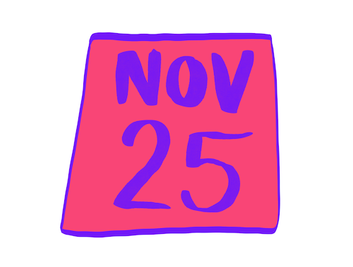
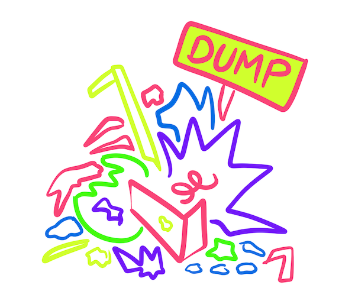

The Game Center:
Two weeks - bugs and art?
Two weeks
I've been the artist in residence at NYU's Game Center for two weeks now. I’ll write about the work more below, about ideas I’m exploring: opposition, play agency, and quiet. But first, some of the raw guck.
A feeling
I feel like it's time for some truths to come out. Like I’ve been swallowing down these tiny truths for years and I thought my guts disintegrated them but actually they were incubating down there. They are all squirming up now and it’s a strange feeling. I feel bigger, stronger, and totally different. Like the fog is coming down and a million truth bugs are flying out of my mouth into the light.

So that’s something.
Whiteboard
The very first day I got here I drew this on the whiteboard.
It is a roadmap. Or maybe a brain dump? I like dumps, so let’s call it a dump.
(You don't need to zoom in.)

A looming deadline
I have to finish something for the No Quarter exhibition in 5 weeks.
The anxiety pops up like an operating system update. The shame about feeling anxiety compounds it. I'm wrapping myself around the shakes and getting enough sleep, food, water, exercise.
Work
Most of my time here is spent doing work. I'm absolutely living the dream, but in case you are salivating over there, you should know that living the dream is mostly just work.
Okay, it's certainly not like lugging garbage and having leaking bags of wet food garbage break over your head as you toss them into the dumpster (I don't miss those days) but it is work.
I dream of moving from idea to prototype in 8 hours. Right now it takes 800 hours. I spend an obscene amount of energy pushing through the certainty that I'll never get it.
I'm circling around ideas and trying and failing and learning new skills and trying to gently coax something living out of the magic place and transplant it into the waking world. Ideally, without killing it.
Exhibitions
I feel uncomfortable being chosen. Taking a podium reinforces the lie of the artist: I'm just one (hu)man.
But it's hard to say no. Of course I want to be chosen, to be seen.
Imagine if we caught the exact same thread? Maybe we even turn towards each other and our faces fall off and our insides bloom out?

Wait
But being chosen means tearing the work from its context, from the interconnected hundreds of thousands of other living beings that make it real.
I put the work in a frame and say: here is the thing.
Ignore the unravelling tapestry I hacked it from. Ignore the human under the table debugging code and eating frozen-dinners while the world implodes.
The NYU building is under construction. The construction worker who just walked by said “This here is some bulllllll-shit!” If my day had a hero, it would be him.
Back to the dump.
Idea: Opposition
One of the ideas I’m exploring is this idea of opposition.
Maybe it’s opposition with an enemy. Maybe it’s just opposition with your own shadow self. But either way, it’s this oppositional movement where you choose one thing, and so I choose the other. And our choice is this beautiful splitting apart, and our opposition is this perfect symmetry. Like we are dancing together. Like we are reflections of each other.
Imagine creating a moment where that truth is visible? Where people have the opportunity to *feel* that truth?
I’ve prototyped this one. I’m realizing how hard it is to fluidly communicate anti-mimicry as a mechanic. Help?

Idea: What is play for you?
A different idea: what if I made space for people to define their own play?
Every child is a play designer and a reality engineer. Sure, children consume play experiences, but they also invent.
So why, as adults, do we only consume? What if we took a moment to stop and awaken the rich diversity of experiences we have that make us feel playful or open or alive?
Imagine being invited inside a tent to create something strange and personal and magical? You are the designer, I am your play friend, here simply to play with you.

Idea: Quiet
And a final idea comes out the party exhibition environment itself. I'm grateful for every chance I’ve had to show my work, but also it’s hell.
Game exhibitions prioritize the loud, the wild. It’s raucous, it’s overstimulating, people get drunk and people unload their fever-fun like a torrent of dayglo vomit all over everything.
So what about a game that only comes to life when the room is silent? Imagine people gently calming the room and then there is something soft and subtle in an impossible space?
Probably this is impossible and so the game is simply unplayable. But even then, for once the cause is clear.
Too many ideas & too much fear
I have a thousand ideas. I oscillate between deeply loving each of them and feeling waves of shame when I imagine how they might come out of me. And how they might seem.
Please please please let me remember that some people will never approve of me, so long as I am what I am. Chasing that love is like charging with a broken cable.
Snags
Of course there are other snags. I’m certain that I don’t deserve to be here. I hurt my neck (twice) and was immobilized for days. A giant flying cockroach FLEW into my bedroom one night and then it hid somewhere inside my bed. I can't afford this city so I'm eating frozen meals. I'm having visa troubles related to repatriation insurance (don't look that up, mom). I went to a coding meet-up in the public library and then received an inappropriate message from another attendee.
And finally there’s a gnawing fear that I won’t make the most of this experience, fear that I’ll wake up and it will be over.
But then there are the people
But then there are the people here, who have been so kind. People talk to me, they listen to me. They invite me places, teach me things, are open to teachings from me. They buy me burritos, they help me with the terror of my visa application, bring me presents, share vulnerabilities, generously give their time, and laugh at my bad jokes.
<3.